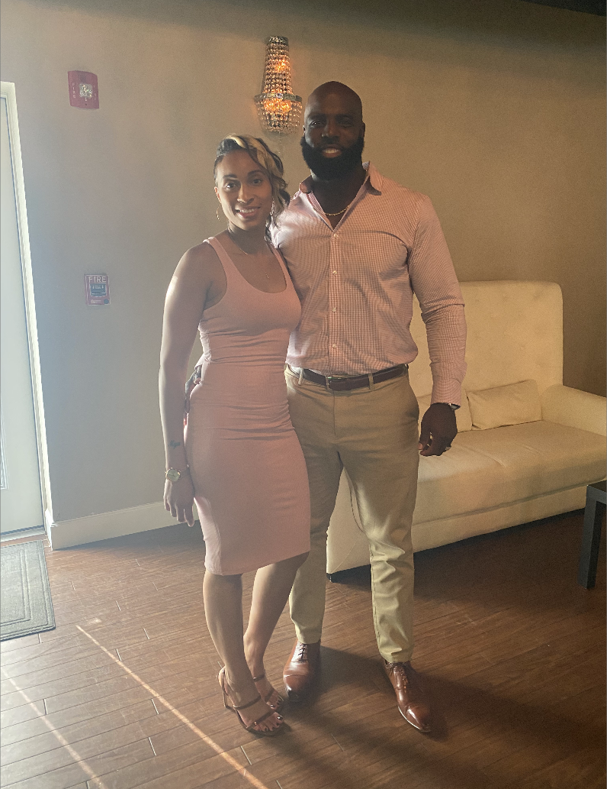
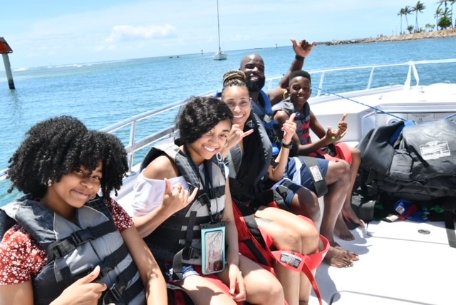
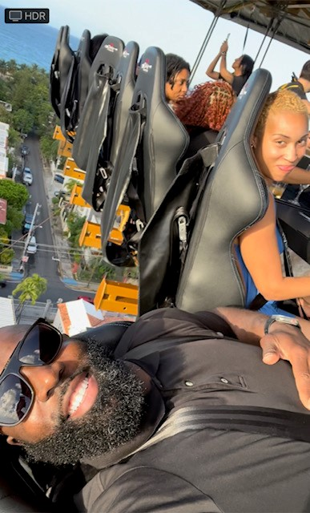

My Wife

My wife is truly my best friend, and I love her more than words can express. She is my confidant, my partner in all things, and the person I turn to for support and encouragement. Whether we’re sharing a quiet evening at home or embarking on new adventures together, her presence brings joy and comfort to my life. Her understanding, kindness, and unwavering support make every day brighter and more meaningful. Our bond goes beyond just being a couple; we share a deep friendship that is built on trust, respect, and mutual admiration. I cherish the moments we spend together, from the simple daily routines to the special occasions that we celebrate. Her love and companionship are the foundation of my happiness, and I am incredibly grateful to have her by my side. She is not only my wife but also my best friend, and I love her with all my heart.
My Wife & Kids

I absolutely love traveling with my family because it combines two of my greatest joys: exploring new places and spending quality time with the people I care about most. Each trip we take is an opportunity to create shared memories, whether we’re discovering a bustling city, relaxing on a serene beach, or hiking through breathtaking landscapes. Traveling together allows us to experience new cultures, try different cuisines, and embark on adventures that bring us closer and strengthen our bond. Our family trips are filled with laughter, learning, and a sense of togetherness that is hard to replicate in our daily lives. From planning the itinerary to reminiscing about our favorite moments, every aspect of the journey is special. Traveling with my family not only enriches our lives with new experiences but also reinforces the importance of cherishing the time we have together. These adventures remind us of the value of family and the joy of exploring the world hand in hand.
Calculated Risk Taker

I’m an adrenaline-pumping, calculated risk-taker! I thrive on the excitement and challenge of pushing boundaries while maintaining a strategic approach. I enjoy activities that get my heart racing, whether its extreme sports, high-stakes business ventures (stocks, gambling), or adventurous travel. This thrill-seeking nature is balanced by my ability to assess situations carefully, weighing potential risks and rewards before making decisions especially since my primary job is a safety rep lol. My calculated approach ensures that even in the face of uncertainty, I have a plan and a backup, minimizing unnecessary risks. My personality is characterized by a blend of boldness and prudence. I’m not afraid to step out of my comfort zone and take on challenges that others might shy away from. This courage is complemented by my analytical mindset, which allows me to evaluate potential outcomes and make informed choices. This combination of traits makes me a dynamic individual who can navigate complex situations with confidence and precision.